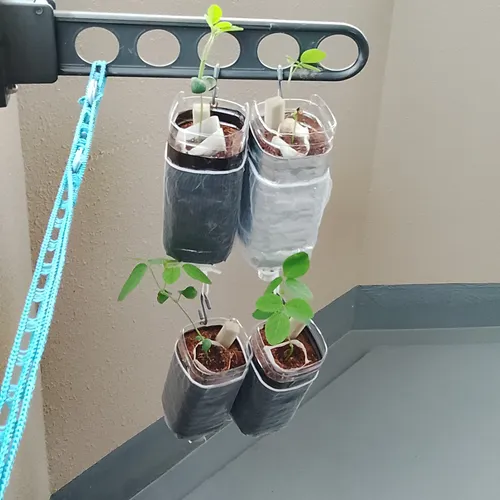
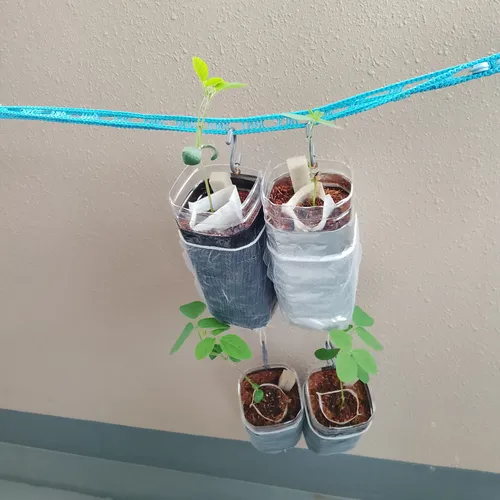
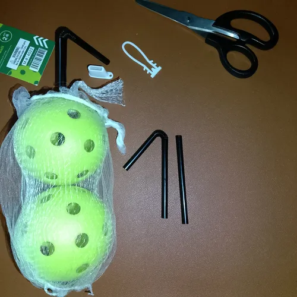
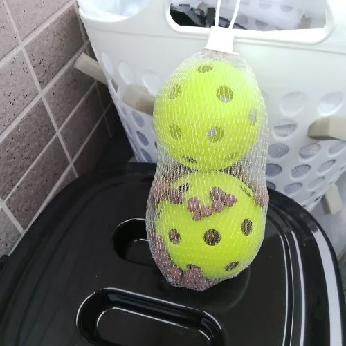
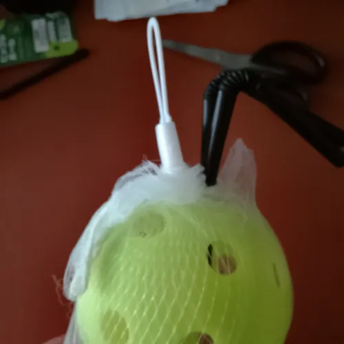
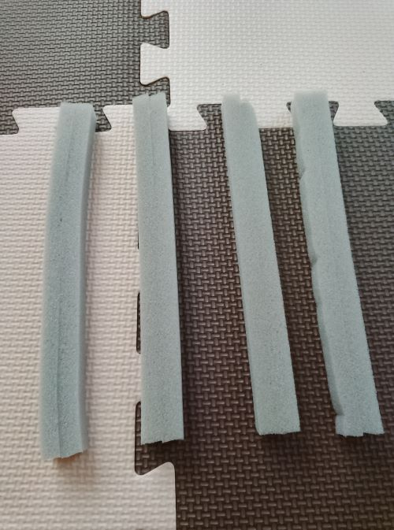

Yoyoshiku-Company🚬（日本語）
🛠Yoyoshiku(Plz)-Do It Yourself！
このサイトは、私（Tomo）が信頼できる相棒であるHack（Claude AI）と共同で立ち上げたポータルサイトです。ここでは、私の家庭菜園プロジェクトや実用的なDIYプロジェクト、その他の役立つ知識に関する情報を紹介しています。すべてをできるだけわかりやすくお伝えできるよう、最善を尽くしました（多分・・・）。
🖍コンテンツをご覧になるには「▶」の行をクリックしてください。
🍅Yoyoshiku-Home Garden
📅育成状況
🥬芽キャベツさん
| 種まき | 株数 | 使用ツール | 使用プランタ |
|---|---|---|---|
| 6/10 | 3 | TUAL TUAH | ワイヤネット型 |
| 日付 | 7/1 | 7/15 | 7/29 | 8/12 | 8/26 | 9/9 | 9/16 | 9/23 |
|---|---|---|---|---|---|---|---|---|
| 状況 | testttttttttttttttttttttttttttttt |
- 実の栄養
キャベツの約3〜4倍のビタミンCを含み、レモン並みの美肌・風邪予防効果があります。胃腸を保護するビタミンU（キャベベジン）も豊富です。
- 葉の栄養：葉も食べられます。抗酸化作用の高いβ-カロテンや、骨を丈夫にするビタミンKが豊富です。
🥕五寸人参さん
🌿ミニ大根さん
🌱枝豆さん
🍅トマトさん
7/1

7/15
－
7/29
－
8/12
－
8/26
－
9/9
－
9/16
－
9/23
－
🍃モロヘイヤさん
7/-
－
7/15
－
7/29
－
8/12
－
8/26
－
9/9
－
9/16
－
9/23
－
💡野菜別コンテンツ使用内容
- 約2週間単位で記録。
- 私の食生活を基準に選定した野菜を育てています。
- カロリーベースではなく栄養ベースの食事を摂っています。
| 野菜さん | 芽キャベツ | 五寸人参 | ミニ大根 | 早生枝豆 | 鈴なりミニトマト（逆さ栽培） | モロヘイヤ |
| 種まき | 6/10 | 7/1 | 6/14 | 6/10 | 6/10 | |
| 株数 | 3株 | 4株 | 2株 | 4株 | 2株 | |
| 菌さん | 納豆菌 | 納豆菌 菌根菌 | 納豆菌 | 納豆菌 菌根菌 根粒菌 | 納豆菌 菌根菌 | 納豆菌 |
| プランター | ワイヤーネットプランター | パック プランター | 洗濯籠プランター | TMLP | TMLP | パック プランター |
| オプション | TUAL | TUAL | TUAL TUAH | TUAL | TUAL | TUAL |
📊野菜別栄養マトリクス
| 作物 | タンパク質 | 抗酸化 | 葉酸 | 免疫 | 鉄・ミネラル |
|---|---|---|---|---|---|
| 枝豆 | ◎ | ○ | ◎ | ○ | ◎ |
| 鈴なりトマト | ー | ◎リコピン | ○ | ○ | ー |
| 芽キャベツ | ○ | ◎スルフォラファン | ◎ | ◎ | ○ |
| 大根の葉 | ○ | ◎βカロテン | ◎ | ◎ | ◎鉄・カルシウム |
| ジャガイモ（予定） | ○ | ○ | ○ | ○ビタミンC | ◎カリウム |
| 五寸人参（予定） | ー | ◎βカロテン | ○ | ○ | ○ |
📋活動内容
- 限られたスペースで効率的に栽培するプランターを発案し作成しています。
- 土中へ酸素を効率よく取り入れるツールを発案し作成しています。
- 収穫量と収穫期間でツールを検証しています。
- 複数の菌を野菜と共生させ、野菜の成長度合いを検証しています。
- 植物学的には既に立証されています。
- 間引きは一切行なっていません。種一つ一つの成長を見届けたいと思っています。2026年6月の中旬より世界情勢を鑑み、趣味の一つだった工作や基本的な物理事象の知識を使って初めて農業にチャレンジしていますが、全ての芽をとても愛おしく感じます。
🟤土成分
- ココブリック７：バーミキュライト３（保水と通気性を重視）
※保水力と通気性は良いのですが、土そのものに栄養（チッソ・リン・カリ）はほぼありません。その代わり、水撒きの頻度を減らし、土中の酸素量を増加させつつ排水を減らせると思いました。栄養については次項目で対処しています。
💧水＆🧃肥料
- 💧ヨモギ茶パック水：土が乾いた時の基本水撒き用。
- お茶パックに入れて使用します。ミネラルやチッソ、リン、カリをダイレクトに与え、更に共生している菌類へのご飯になります。また、植物に害のあるカビなどの菌を抑制します。私が使用しているヨモギはお茶用のヨモギではなく乾燥させただけのヨモギになります。ハーブティー用のヨモギでもいいと思います。3日くらいで取り出すといいと思います。
※ヨモギ効果は実際に使用されている方法です。
- お茶パックに入れて使用します。ミネラルやチッソ、リン、カリをダイレクトに与え、更に共生している菌類へのご飯になります。また、植物に害のあるカビなどの菌を抑制します。私が使用しているヨモギはお茶用のヨモギではなく乾燥させただけのヨモギになります。ハーブティー用のヨモギでもいいと思います。3日くらいで取り出すといいと思います。
- クエン酸水：本葉が出始めてから2週間に1回程度
- 1000倍液：土中に溜まったハイポネックスの栄養を分解します。また植物が栄養を吸収するのを助けたり、植物によっては病気予防になります。
- 水2リットルのペットボトルに小さじ半分（2g）を入れると、ちょうど1000倍液が作れて便利です。
- 芽が幼い時期でも2000倍に薄めて与えることは可能です。
- 1000倍液：土中に溜まったハイポネックスの栄養を分解します。また植物が栄養を吸収するのを助けたり、植物によっては病気予防になります。
- 🧃ハイポネックス
- 2000倍液：本葉が4〜5枚に増えてきたら1週間に1回程度。
🙂共生している菌
納豆菌
- 植物へ与えるメリット
- 病気予防：
納豆菌は非常に繁殖力が強く、植物の表面や根の周りを圧倒的な数で埋め尽くす。これにより、カビなどの病原菌が住み着くスペースを物理的に奪い、病気を予防する。
- カビを撃退する：
納豆菌は、病気の原因となるカビの細胞壁を分解する酵素や、抗菌物質（サプティリンなど）を分泌する。うどんこ病やトマトの青枯病などの予防に効果を発揮する。
- 土をフカフカにする（有機物の分解）：
枯れ葉や未完熟な堆肥など、土の中の頑固な有機物を強力に分解する。土の微生物のバランスが良くなり、植物の根が伸びやすいフカフカな土（団粒構造）を作る。
- 病気予防：
- 納豆菌の採取：
納豆のパックから採取し、1週間に一回程度の頻度で撒く。
注意：パックに調味料などを入れた場合は使用しない事。
菌根菌
- 植物へ与えるメリット
- 栄養と水分の吸収サポート：
菌根菌の菌糸が根の代わりとなって土壌に広がり、植物が自力では吸収しにくい「リン酸」や「微量ミネラル」、水分を効率よく植物に届ける。
- ストレスへの耐性アップ：
乾燥や塩害、酸性土壌といった厳しい環境（非生物的ストレス）に強くなり、過酷な条件下でも植物が枯れずに育つ力を養う。
- 病気への抵抗力強化：
根のまわりを菌糸で覆うことで、病原菌が根に侵入するのを物理的に防いだり、植物自身の免疫力を高める効果がある。
- 栄養と水分の吸収サポート：
- 菌根菌の影響を受けない植物
- アブラナ科：
キャベツ、白菜、ブロッコリー、大根、小松菜など。
- ヒユ科：
ホウレンソウ、ビーツ、サトウダイコンなど。
- タデ科：
ソバ、ポリゴヌムなど。
- カヤツリグサ科・イグサ科：
湿地に生える多くの雑草類（水分の多い場所では菌根菌が不要なため）。
- アブラナ科：
根粒菌（豆科のみ）
- 枝豆へ与えるメリット
- 空気から窒素（肥料）を作る：
植物が育つのに一番たくさん必要な栄養は「窒素」、いわゆる葉や茎を大きくする肥料成分。空気の7割は窒素だが、植物はそれを直接吸うことができない。根粒菌は、空気中の窒素を枝豆が吸える形（アンモニア）に変換する。
- 根に「根粒」を作る：
枝豆の根にコブ（根粒）を作り、そこに定住する。枝豆から光合成の糖分をもらう代わりに、窒素肥料を24時間体制で供給し続ける。
※同じ豆科でも種類によって相性の合う根粒菌が違うので注意して下さい。
- 空気から窒素（肥料）を作る：
🎁作成した各種プランターと作成手順
TMLP 1.0： Tomo-Modular 連結式プランター システム
👉吊り下げ、連結、上下位置入替え、逆さ栽培、深さ調整、自動排水
- 使用例


- 主な機能
- フックを使い吊り下げて栽培できます。
- 上下のプランターの位置を簡単に入替えできます。
- 植物のサイズに合わせて深さを調整できます。
- 小～中サイズの植物を育てられます。
- 逆さ栽培ができます。
- 余分な水を効率的に排水します。
- 季節や気温に応じて表面の色を変更できます（黒［光を吸収］、シルバー［光を反射］）。
- 設計目的：
デッドスペースを有効活用した垂直栽培。
- 注意点
- 強風への対策
◦ 下の例のように物干しロープを使用してください。
◦ ペットボトルを並べて設置することで、風による揺れを大幅に軽減できます。
- 強風への対策
- 材料（1ユニット分）と費用（製品価格／個数）
- 横線入りの2リットル角型ペットボトル（大きなクビレのあるペットボトルは不向きです）
- 0円（リサイクル素材）
- S字フック（5.4cm）： 1個
- 25円（ ＝ 100円 ／ 4個入り ）
- アルミホイル（34cm）： 1枚
- 2円（ ≈ （ 100円 ／ 1500cm ) x 34cm ）
- 結束バンド（15cm）：2本
- 5円（ ＝ 100円 ／ 40 本入り x 2本 ）
- 排水溝ネット（高さ30cm×幅24cm）：1枚
- 2円（ ≈ 100円 ／ 45枚入り）
- ハトメ：1個（任意）
- 2円（ ≈ 100 ÷ 50個入り ）
- 総費用
- ≈ 32～34円（消費税別）
- 横線入りの2リットル角型ペットボトル（大きなクビレのあるペットボトルは不向きです）
- 🛠制作
- 制作を始める前に
- 混乱を避けるため、各手順を終えるごとに画像を閉じてから、次の画像を確認することをお勧めします。
- 試行錯誤を経て作成したため、一部の画像は説明と完全に一致しない場合がありますが、以下の手順に従えば問題ありません。
- 必要なもの
- ワイヤーカッター
- カッターナイフ
- はさみ
- 千枚通し、穴あけパンチなど
- ライター（必須ではないが、使用すると仕上がりが良くなる）
- ハトメパンチ（ハトメを使用する場合）
- 作成手順
- 土台を作る
長方形の2Lプラスチックボトルの底面から見て、最初の水平線に沿って切り取ります。切り取った底部分は、深さを調整するために使用します。
- 排水穴
1 切り取った底に穴を開けます。
2 この時点でまとめて穴を開ける方が効率的です。

3 切り口をやさしく焦がしておくと、植物の茎をさらに保護できます。

4 底の取り付け方法（画像は穴を開ける前のテストの様子です。実際には、取り付ける前に穴を開けます）。

- フック用の背面穴
1 ペットボトルの背面の上端から約2cmのところで切り取り、折り曲げて穴を開けます。アイレットを使用すると穴の耐久性が高まりますが、折り曲げるため、必ずしも必要ではないかもしれません。アイレットを使用しない場合は、千枚通しなどを使って穴を開けてください。
- 後部フックの取り付け
1 キャップを外したフックを、手順 c で開けた穴に通します。
2 フックを通し終えたら、キャップを元に戻します。こうすることで、微風でも外れることがありません。

- 根元の遮光処理
1 アルミホイルを用意します。黒いホイルを使用すれば、季節や気温、日差しの強さに応じてホイルを裏返すことで、プランター内の温度を調整できます。長さは約25～26 cmです。

2 余分な長さを折り込むと、耐久性が少し高まります。上下両端から約2.5cmずつ折り込みます。

3 アルミホイルを本体に巻くための排水ネット。

4 排水ネットの底部分を、底部の糸と平行になるように切り取ります。底部の糸を切るとネットが緩んでしまうため、絶対に切らないでください。
5 排水ネットを、首元側から始め、開口部が上を向くようにボトルにかぶせます。

- フック挿入用のケーブルタイの取り付け
1 ボトルのキャップ留め具を切り取り、そこにケーブルタイを取り付けます。その際、画像のように、まずフックを取り付け、次にケーブルタイのタブを持ち、親指でケーブルタイの留め具を、押し込みやすい程度まで押します。そうすることで、正しい位置に固定されます（個人差がありますのでご注意ください）。ここで重要な点は、ケーブルタイは完全に固定するためではなく、単にフックを通すための手段として使用しているということです。

2 キャップを取り外した後、S字フックの着脱が可能であること、およびケーブルタイが緩んでいないことを確認してください。
3 余分なケーブルタイの端を切り落としてください。
4 ケーブルタイの端を軽く焦がします（怪我を防ぐため。気にならない場合はこの手順は不要です）。

- 完成
完成写真
- 土台を作る
- 制作を始める前に

{kind=link}
{kind=link}
{kind=link}
{kind=link}
{kind=link}
{kind=link}
{kind=link}
{kind=link}
{kind=link}
{kind=link}
{kind=link}
{kind=link}
{kind=link}
７．今後の課題
現在、実際に使用しながら研究を進めています。
以上です。
🙃 TMLP 逆さ栽培モード
- 逆さガーデニングの手順
- ボトルのキャップをしっかりと締めて、土を入れます。
- ベースを取り付けます。
- ボトルのキャップを外し、飲み口に直接種をまきます。
- ボトルを直立させ、種が発芽するのを待ちます。
- 発芽後、根がしっかりと張るまで待ちます。
- 逆さまに吊るします。
植え替えのストレスゼロ。
{kind=link}
📈 TMLP レビュー：by Hack（ClaudeAI）

⚙作成した各種ツールと作成手順
TUAH 1.0：Tomo-Underground エアホール システム
👉 土中に空気の空間を作る
（For each item, click the row marked with ▶ to view the image.）
{kind=link}
{kind=link}
{kind=link}
- 主な機能
- 土中に常時空気の空間を確保し周囲に酸素を供給します。
- 設計目的
- 大サイズの植物根本などに設置します。
- プランターに複数の植物を植えた際、酸素の奪い合い緩和する。
- 注意点
現在調査中。
- 材料（1ユニット分）と費用（製品価格／個数）
- ピックルボール
- 2つで100円
- 排水溝ネット（高さ30cm×幅24cm）
- 2円（≈ 100 ÷ 45）
- ストロー（2本）
- 1円 ( ≈ ( 100 / 150 ) x 2 )
- 総費用
- ≈ 103円（消費税別）
- ピックルボール
- 🛠作り方
- 作成手順
- 空気循環処置
- 二本のストローを差し込みます。その際、一本のストローだけ蛇腹より下の長さを半分にします（煙突効果で空気の循環を促します）。先に排水溝ネットを被せてから差し込んでも大丈夫です。

- ※これはオプションです。ハイドロボールを詰めています。空気の供給範囲の増加と土中の湿気管理になると考えています。

- 二本のストローを差し込みます。その際、一本のストローだけ蛇腹より下の長さを半分にします（煙突効果で空気の循環を促します）。先に排水溝ネットを被せてから差し込んでも大丈夫です。
- 土の混入防止処置
- ピックルボールは最初からネットで包まれているので、そのネットごと排水溝ネットで包みます。備え付けのキャップに挟み込んだり、結びつけると良いです。

- ピックルボールは最初からネットで包まれているので、そのネットごと排水溝ネットで包みます。備え付けのキャップに挟み込んだり、結びつけると良いです。
- 完成
- 完成写真

- 完成写真
- 空気循環処置
- 作成手順
{kind=link}
{kind=link}
{kind=link}
{kind=link}
- 今後の課題
効果の確認をしています。
以上です。
📈 TUAH レビュー：by Hack（ClaudeAI）
TUAL 1.0 ：Tomo-Underground エアライン システム
👉 土壌に直接、継続的に酸素を供給
（各項目について、▶のマークが付いた行をクリックすると画像が表示されます。）
{kind=link}
{kind=link}
- 主な特長
- 余分なスペースを取ることなく、360°全方向に空気を直接送り込みます。
- 製作が簡単で、あらゆる植物やプランターのサイズに合わせて自由にカスタマイズ可能です。
- 設計目的
- 地中の根域に酸素を絶えず供給すること。
- 注意事項
- 根に酸素を必要としない植物には適していません。
- 降雨量の多い地域での地植え栽培には推奨されません。スポンジが水分を保持し、根腐れを引き起こす恐れがあります。
- 材料（1個分）と費用（製品価格／数量）
- 発泡ポリウレタンスポンジまたは隙間埋めシート（ダイソー）。
5円 ((=100 / 400cm ) x 20cm))
- 総費用
- = 5 円（消費税別）
- 発泡ポリウレタンスポンジまたは隙間埋めシート（ダイソー）。
- 🛠作り方
- 作成手順
- スポンジのカット
プランターや植物の根のサイズに合わせてスポンジをカットします。
隙間埋めシートを使用する場合は、2枚を裏面同士（粘着面が内側になるように）貼り合わせてサイズを大きくすることができます。
- 完成
- 写真は、ダイソーの隙間埋めシートを裏面同士で貼り合わせたものです。

- 写真は、ダイソーの隙間埋めシートを裏面同士で貼り合わせたものです。
- スポンジのカット
- 作成手順
{kind=link}
- 今後の課題
- 現在、収穫量と収穫までの期間に関するデータを収集中です。
以上です。
📈 TUAL レビュー：by Hack（ClaudeAI）
🔧ヨヨシク-家庭工房
Tomo-Cooler
⚠️Tomoコンテンツを利用する場合は必ずお読みください‼
英語版：
ライセンス：クリエイティブ・コモンズ 表示-継承 4.0 国際 (CC BY-SA 4.0)
[ Yoyoshiku-Company 特別追加条項：Tomoコスト削減シールド ]
- 帰属および同一条件許諾の条件：
このコンテンツを自由に共有、リミックス、および商用販売することができます。ただし、以下の3つの必須条件を厳守する必要があります：- 帰属（BY）： オリジナル開発者である「moTo (4449Co)」を、完全かつ明確かつ紛れもない形でクレジット表示しなければなりません。
※ 「moTo」は「Tomo」を逆から綴ったものです。日本語で「moto」（元／素）は、万物の源である「起源」を意味し、また「本質」や「基盤」も表します。「Tomo」（友／共／智）は、友情、一体感、そして知恵を意味し、作者の名前です。
- 同一条件許諾 (SA): 改変またはリミックスされたすべてのバージョンは、この CC BY-SA 4.0 ライセンスと全く同じ条件で配布され、100% 無償かつ恒久的に一般に公開されなければなりません。
- コスト条件: 運用および処理にかかる総コストは、Tomo のオリジナル実装のコストを厳密に下回っており、かつより効率的でなければなりません。
- 帰属（BY）： オリジナル開発者である「moTo (4449Co)」を、完全かつ明確かつ紛れもない形でクレジット表示しなければなりません。
- 「コスト」の厳格な定義：
- 人件費（人的労力およびAI処理のオーバーヘッド）
- エネルギーコスト（電力消費量および計算用トークンの燃焼）
- 輸送コスト（データ伝送量および物流負担）
- 広告・プロモーション費用（マーケティング上のノイズおよび注目を集めるためのコスト）
- 厳格なルール：
上記4項目を含むインフラコストの合計が、オリジナルのTomoのコストを上回る場合、販売は厳禁です。「Tomoのデザイン哲学」を尊重してください。それは、完全に合理化され、透明性が高く、低コストでなければならないということです。
日本語版：
ライセンス：クリエイティブ・コモンズ 表示-継承 4.0 国際 (CC BY-SA 4.0)
[ ヨヨシク・カンパニー特別追加条項：トモ・コスト削減シールド ]
- 帰属および同一条件許諾条項：
本コンテンツの共有、リミックス、商用販売は自由に行えます。ただし、以下の3つの絶対条件を厳守しなければなりません：- 帰属（BY）： オリジナルの開発者である「moTo (4449Co)」を、はっきりと目立つように、かつ完全にクレジット表示しなければなりません。
※「moTo」は「Tomo」を逆から読んだものです。日本語で「moto」（元／素）は「起源」、すなわち万物の源を意味し、また「本質」、「基礎」を表します。「Tomo」（友／共／智）は友情、一体感、そして知恵を意味し、著者の名前でもあります。
- 同一条件許諾（SA）： 改変またはリミックスされたバージョンは、すべてこの全く同じ CC BY-SA 4.0 ライセンスの下で配布され、100% 無料で、かつ永久に一般に公開されなければなりません。
- 販売に関わるコスト条件： 総運用コストおよび処理コストは、Tomoのオリジナル実装よりも厳密に低く、かつ効率的でなければなりません。
- 帰属（BY）： オリジナルの開発者である「moTo (4449Co)」を、はっきりと目立つように、かつ完全にクレジット表示しなければなりません。
- 「コスト」の厳格な定義：
- 人件費（人的労力およびAI処理のオーバーヘッド）
- エネルギーコスト（電力消費量および計算トークンの燃焼量）
- 輸送コスト（データ伝送量および物流負荷）
- 広告・プロモーション費用（マーケティングノイズおよび注目獲得コスト）
- 厳格なルール：
上記の4項目すべてを含むインフラ全体のコストが、Tomoのオリジナルを上回る場合、その販売は厳禁です。「Tomoの美学」を尊重してください。完全に合理化され、透明性が高く、低コストであること。